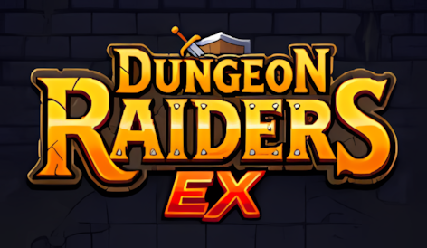
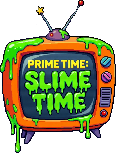
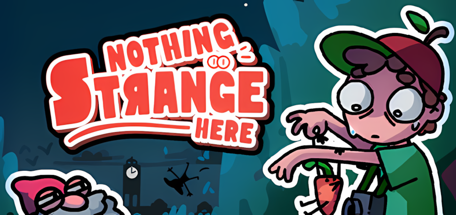
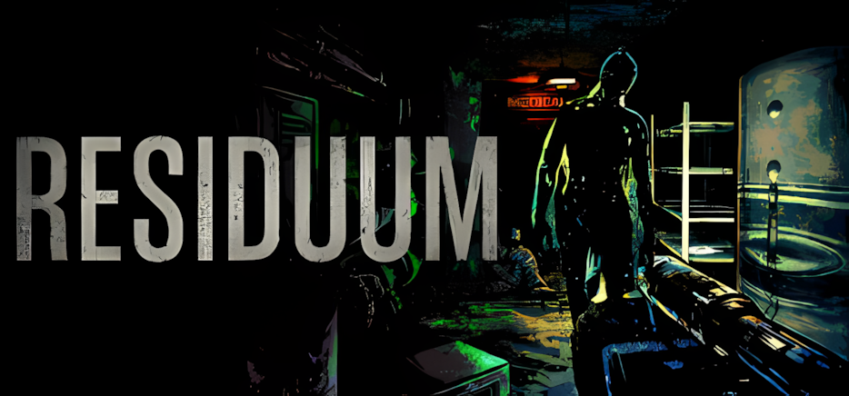

Game QA Portfolio
QA testing work on indie demos, early builds, updates, and live systems. This is the practical testing work I bring to developers and teams.
Latest Released Project
Mama Llama’s Food Cart Adventure
Loom & Lore Games • Released 24/05/2026 on PC and Google Play
Embedded QA support during final release preparation for the Google Play and PC launch versions.
- Gameplay readability and onboarding clarity
- Touch interaction and usability testing
- Accessibility-related readability observations
- Bug reporting, fix validation, and regression testing
- Developer-facing handovers and release-readiness support
Current Projects
The following projects are currently in active development or receiving ongoing QA support. My involvement ranges from embedded QA leadership and regression testing to onboarding reviews, usability analysis, issue validation, and player-focused quality assurance support.

Dungeon Raiders
Loom & Lore Interactive Games • Ongoing QA Support
Embedded QA Lead providing ongoing QA support for a released mobile puzzle roguelike inspired by classic chain-matching dungeon crawlers.
- Player-focused exploratory gameplay testing
- UI stability, overlay persistence, and mobile interaction checks
- Gameplay readability and transition flow testing
- Regression testing for implemented fixes
- Developer-facing QA summaries and ongoing polish support

Prime Time: Slime Time
Loom & Lore Interactive Games • In Development
Embedded QA Lead supporting a released mobile puzzle roguelike inspired by classic chain-matching dungeon crawlers.
- Player-focused exploratory gameplay testing and focused regression validation
- Onboarding clarity, progression flow, and gameplay readability checks
- Upgrade clarity, pickup visibility, and combat readability testing
- Mobile usability, joystick/input stability, and interaction testing
- Ongoing regression testing for fixes, new mechanics, and added content

Nothing Strange Here
Dandelion Developers • Demo Polish for Steam Next Fest
QA support for a cozy investigative adventure game, providing exploratory testing, issue validation, progression testing, and release-readiness support for an upcoming Steam Next Fest demo.
- Player-focused exploratory gameplay testing with targeted Next Fest readiness validation
- Quest progression, objective guidance, and Journal synchronization checks
- Save/Load persistence and Time Skip interaction testing
- Onboarding clarity, system interaction, and boundary testing
- Performance, stability, regression testing, and player-reported issue validation

RESIDUUM
Will Nightingale • In Development
QA support for an in-development first-person psychological horror game, providing exploratory testing, issue validation, progression testing, usability reviews, and player feedback analysis across active development builds.
- Player-focused onboarding and early progression exploratory testing
- Onboarding clarity, navigation flow, and progression readability checks
- Interaction clarity, note readability, and early-game usability testing
- Issue triage, bug validation, and player feedback analysis
- QA workflow development and developer-facing testing support
Developer Feedback
Feedback received from developers following QA work, release support, and exploratory testing projects.
Mama Llama's Food Cart Adventure
“Releasing a high-quality game is vital for a new studio. Kelina made sure our Google Play Store launch for Mama Llama went smoothly. She caught critical UI/UX and code bugs before release. Her delivery was highly organized. Every report included thorough documentation, reproducible steps, and helpful screenshots. Kelina handles QA with the finesse of a master.”View Project
Echoes of Delivery
“Thank you for taking the time to go through Echoes of Delivery and for putting together such a detailed, well-structured QA report. Your observations about onboarding, driving mechanics, input clarity, and player guidance are very helpful. I'll use your write-up as a reference while refining the onboarding flow and fixing the input-related issues.”View QA Pass
Cult of PiN
“This is top tier professional level feedback. The formatting and presentation is as good (if not better) than QA analysis I've worked with before from major companies, and I've been doing this for over a decade. You're absolutely spot on about the colours, and this will drive improvements to information clarity. I would absolutely love to run future builds past you again, and I'd be more comfortable paying for this level of testing.”View QA Pass
Looking for QA Support?
For a fuller breakdown of my QA testing approach, services, reporting style, and the types of support I offer to developers and indie teams, visit my QA Services page.
Contact
I’m currently open to freelance, contract, and longer-term QA opportunities.